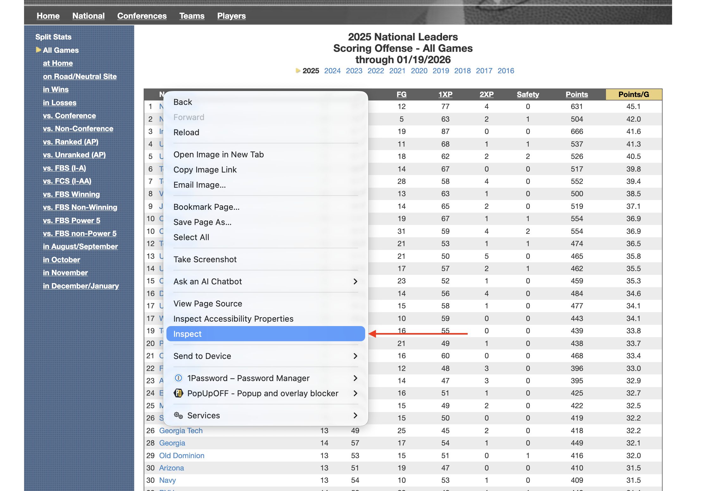
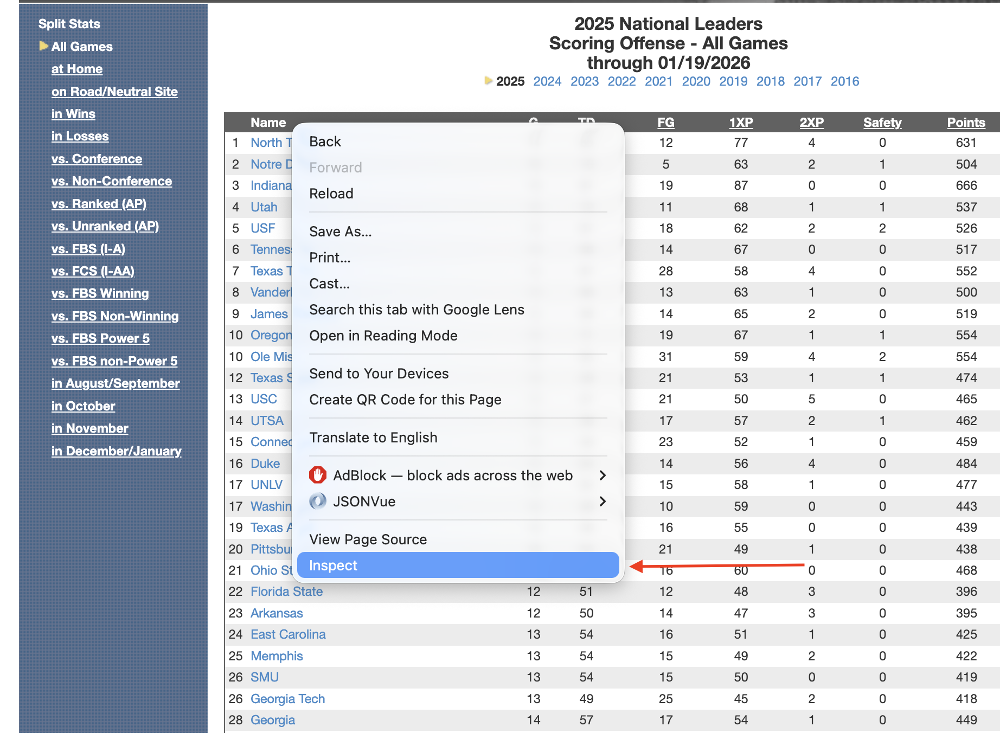
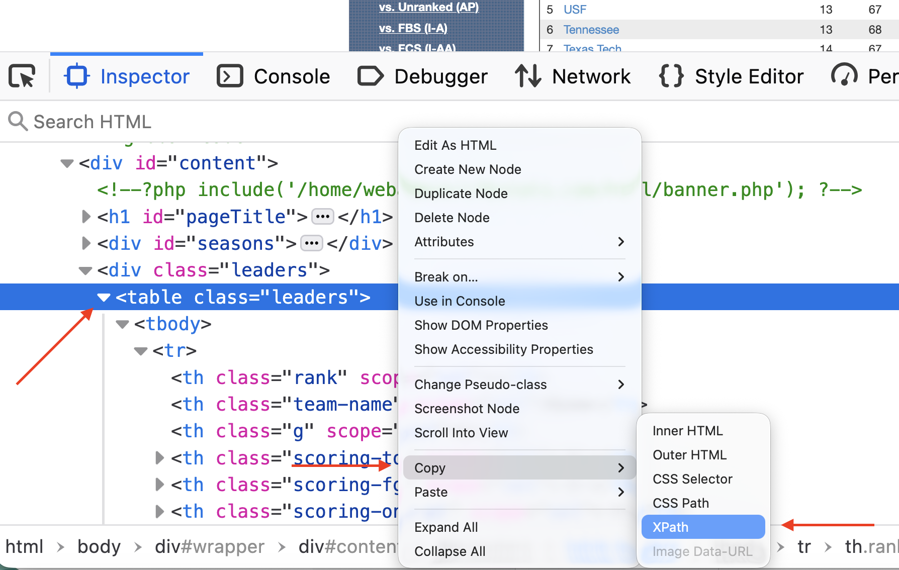

library(tidyverse)
library(rvest)Scraping sports data with R can be categorized into Easy, Medium and Hard. Some sites just produce simple, clean and basic HTML for us to consume at our leisure. Some people work for the NCAA. That’s the two ends of our spectrum.
There is a github repo that has all this code in it as well here.
First, the easy way
First, we need libraries
Sometimes the Gods smile upon you and give you a page with simple HTML, nicely formatted with one header row. cfbstats.com is an example of that. Here is there page for scoring offense stats. Open it in a browser because we’re going to need it.
Scraping it
First, define a URL variable and fill it with our cfbstats url.
url <- "https://cfbstats.com/2025/leader/national/team/offense/split01/category09/sort01.html"Next, Rvest works in four steps when it’s a table.
- Start with your URL
- Run the whole request/response cycle with
read_html() - Find your table html with
html_elementand the xpath to it. - Convert that to a dataframe
Let’s start with the first two:
url |>
read_html(){html_document}
<html lang="en">
[1] <head>\n<!-- Global site tag (gtag.js) - Google Analytics --><script asyn ...
[2] <body>\n<div id="wrapper">\r\n<div id="breadcrumb">\r\n <span class="lab ...Okay, we can see that we are getting HTML from our URL.
Because at NICAR, the network isn’t guaranteed, let’s save our HTML as results and use that instead of a fresh request every time.
results <- url |>
read_html()Going forward, we will now use results instead of url |> read_html() because they are the same thing without having to stress the network.
Now we need to get some information from the page. Specifically, we need the xpath to our HTML table.
In Chrome, Firefox or Edge, right-click on the upper right corner of your html table and go down to Inspect. It will look like this:


Note: If you are on Safari, you will have to enable developer tools to make this work.
Now, in the HTML window that pops up, locate the HTML <table> tag. It must be the <table> tag, not <div class="table">. One is a table, one is a division named table. The table will work, the division … could … work but will require a lot more code. This is the easy way, remember.
Click on the table tag so that it is highlighted. Then Right Click on that table tag, go down to Copy and then to Xpath.

Now that you have the Xpath copied, you’re ready for the next step – traversing the DOM (or Document Object Model) to isolate our table.
results |>
html_element(xpath = '/html/body/div/div[3]/div[2]/table'){html_node}
<table class="leaders">
[1] <tr>\n<th scope="col" class="rank"></th>\r\n <th scope="col" class="t ...
[2] <tr>\n<td>1</td>\r\n <td class="team-name"><a href="/2025/team/497/sc ...
[3] <tr class="even-row">\n<td>2</td>\r\n <td class="team-name"><a href=" ...
[4] <tr>\n<td>3</td>\r\n <td class="team-name"><a href="/2025/team/306/sc ...
[5] <tr class="even-row">\n<td>4</td>\r\n <td class="team-name"><a href=" ...
[6] <tr>\n<td>5</td>\r\n <td class="team-name"><a href="/2025/team/651/sc ...
[7] <tr class="even-row">\n<td>6</td>\r\n <td class="team-name"><a href=" ...
[8] <tr>\n<td>7</td>\r\n <td class="team-name"><a href="/2025/team/700/sc ...
[9] <tr class="even-row">\n<td>8</td>\r\n <td class="team-name"><a href=" ...
[10] <tr>\n<td>9</td>\r\n <td class="team-name"><a href="/2025/team/317/sc ...
[11] <tr class="even-row">\n<td>10</td>\r\n <td class="team-name"><a href= ...
[12] <tr>\n<td>10</td>\r\n <td class="team-name"><a href="/2025/team/433/s ...
[13] <tr class="even-row">\n<td>12</td>\r\n <td class="team-name"><a href= ...
[14] <tr>\n<td>13</td>\r\n <td class="team-name"><a href="/2025/team/657/s ...
[15] <tr class="even-row">\n<td>14</td>\r\n <td class="team-name"><a href= ...
[16] <tr>\n<td>15</td>\r\n <td class="team-name"><a href="/2025/team/164/s ...
[17] <tr class="even-row">\n<td>16</td>\r\n <td class="team-name"><a href= ...
[18] <tr>\n<td>17</td>\r\n <td class="team-name"><a href="/2025/team/465/s ...
[19] <tr class="even-row">\n<td>17</td>\r\n <td class="team-name"><a href= ...
[20] <tr>\n<td>19</td>\r\n <td class="team-name"><a href="/2025/team/697/s ...
...Note: Different HTML engines in browsers come up with different answers for the Xcode. Yours might look slightly different than mine and still work. Firefox and Chrome do this a lot.
Also note: Apostrophes around the Xpath, not quotes. Why? Because quotes can be a part of Xpaths.
Now finally: Turn this all into a table.
results |>
html_element(xpath = '/html/body/div/div[3]/div[2]/table') |>
html_table()# A tibble: 136 × 10
`` Name G TD FG `1XP` `2XP` Safety Points `Points/G`
<int> <chr> <int> <int> <int> <int> <int> <int> <int> <dbl>
1 1 North Texas 14 85 12 77 4 0 631 45.1
2 2 Notre Dame 12 70 5 63 2 1 504 42
3 3 Indiana 16 87 19 87 0 0 666 41.6
4 4 Utah 13 72 11 68 1 1 537 41.3
5 5 USF 13 67 18 62 2 2 526 40.5
6 6 Tennessee 13 68 14 67 0 0 517 39.8
7 7 Texas Tech 14 67 28 58 4 0 552 39.4
8 8 Vanderbilt 13 66 13 63 1 0 500 38.5
9 9 James Madison 14 68 14 65 2 0 519 37.1
10 10 Oregon 15 71 19 67 1 1 554 36.9
# ℹ 126 more rowsVictory, right? Sort of. Note that the first column has no name. That will cause no end of problems for you down the road. Now is the time to fix that.
When I teach scraping with rvest, the order of operations I give my students that works from a logical standpoint goes like this:
- Get the page.
- Get the data.
- Clean the headers/column names.
- Clean the data. Got columns with $ or % in them? Strip them. Funny name splits? Fix them here.
- Save the data to a new dataframe.
- Analyze, visualize, profit.
We’ve done 1 and 2. If we now do 3, 4 is done for us because cfbstats gets it and 5 and 6 will be up to you.
How do we fix this? Because it’s just one column, let’s use the rename function from tidyr.
results |>
html_element(xpath = '/html/body/div/div[3]/div[2]/table') |>
html_table() |>
rename(
Rank = 1
)# A tibble: 136 × 10
Rank Name G TD FG `1XP` `2XP` Safety Points `Points/G`
<int> <chr> <int> <int> <int> <int> <int> <int> <int> <dbl>
1 1 North Texas 14 85 12 77 4 0 631 45.1
2 2 Notre Dame 12 70 5 63 2 1 504 42
3 3 Indiana 16 87 19 87 0 0 666 41.6
4 4 Utah 13 72 11 68 1 1 537 41.3
5 5 USF 13 67 18 62 2 2 526 40.5
6 6 Tennessee 13 68 14 67 0 0 517 39.8
7 7 Texas Tech 14 67 28 58 4 0 552 39.4
8 8 Vanderbilt 13 66 13 63 1 0 500 38.5
9 9 James Madison 14 68 14 65 2 0 519 37.1
10 10 Oregon 15 71 19 67 1 1 554 36.9
# ℹ 126 more rowsI always think this is backwards from how my brain works, but rename says “name a column Rank and that’s column 1 you’re renaming.” My brain wants it the other way, but that won’t work.
It won’t always be this easy.
Medium Level: more spice
The medium level mostly has to do with humans making decisions for humans. How dare they.
First, we need libraries
library(tidyverse)
library(rvest)
library(janitor)Frequently, you will run into sports data providers who believe humans look at their tables of data. And they will make design decisions based on human eyes and reasoning abilities. So annoying. One of the best sports data sites on the planet – and one of the worst offenders of this Humans Look At Tables sin – is Sports Reference. Their sin? Two row header rows. Which results in header names repeating. Which is bad.
It’s March. Which means the sports world is fixated on college basketball. So let’s scrape some. Our target is the school stats page on Sport Reference’s Men’s College Basketball page (there is an identical version for the women’s game if you like).
Go to that page, scroll down to the data and you’ll see the issue: Two row header rows, names that repeat.
Scraping and storing it
Let’s fetch this page and store it so we’re not repeatedly requesting it.
mbb <- "https://www.sports-reference.com/cbb/seasons/men/2026-school-stats.html"
results <- mbb |> read_html()Similar to the easy method, get the xpath for the table. The nice thing about Sports Reference: They use ids for their tables, which makes the xpath super simple.
results |>
html_element(xpath = '//*[@id="basic_school_stats"]') |>
html_table()# A tibble: 402 × 38
`` `` Overall Overall Overall Overall Overall Overall `` Conf. Conf.
<chr> <chr> <chr> <chr> <chr> <chr> <chr> <chr> <lgl> <chr> <chr>
1 Rk Scho… G W L W-L% SRS SOS NA W L
2 1 Abil… 27 13 14 .481 -5.89 -0.85 NA 5 9
3 2 Air … 27 3 24 .111 -13.87 4.69 NA 0 16
4 3 Akron 27 22 5 .815 8.80 -3.00 NA 13 1
5 4 Alab… 27 20 7 .741 23.11 14.37 NA 10 4
6 5 Alab… 28 16 12 .571 -13.09 -10.01 NA 9 6
7 6 Alab… 28 9 19 .321 -13.35 -7.13 NA 6 9
8 7 Alba… 28 10 18 .357 -13.51 -6.99 NA 6 7
9 8 Alco… 26 7 19 .269 -18.86 -4.63 NA 6 8
10 9 Amer… 28 15 13 .536 -6.68 -5.72 NA 8 7
# ℹ 392 more rows
# ℹ 27 more variables: `` <chr>, Home <chr>, Home <chr>, `` <chr>, Away <chr>,
# Away <chr>, `` <chr>, Points <chr>, Points <chr>, `` <chr>, Totals <chr>,
# Totals <chr>, Totals <chr>, Totals <chr>, Totals <chr>, Totals <chr>,
# Totals <chr>, Totals <chr>, Totals <chr>, Totals <chr>, Totals <chr>,
# Totals <chr>, Totals <chr>, Totals <chr>, Totals <chr>, Totals <chr>,
# Totals <chr>Annnnd oof we have a car crash at the top.
Fixing headers
First things first, we need to tell rvest to ignore the table headers. Then, we can bring some janitor functions to bear on this. Janitor will let us use a row of data to create headers. When we ignore the table headers, that row that has all of our column names in it will become row 2. Then, because Sports Reference is so human centered, we’ll use janitor’s clean_names() function to … clean up those names.
results |>
html_element(xpath = '//*[@id="basic_school_stats"]') |>
html_table(header = FALSE) |>
row_to_names(row_number = 2) |>
clean_names()Warning: Row 2 does not provide unique names. Consider running clean_names()
after row_to_names().# A tibble: 401 × 38
rk school g w l w_l_percent srs sos na w_2 l_2
<chr> <chr> <chr> <chr> <chr> <chr> <chr> <chr> <lgl> <chr> <chr>
1 1 Abilene Ch… 27 13 14 .481 -5.89 -0.85 NA 5 9
2 2 Air Force 27 3 24 .111 -13.… 4.69 NA 0 16
3 3 Akron 27 22 5 .815 8.80 -3.00 NA 13 1
4 4 Alabama 27 20 7 .741 23.11 14.37 NA 10 4
5 5 Alabama A&M 28 16 12 .571 -13.… -10.… NA 9 6
6 6 Alabama St… 28 9 19 .321 -13.… -7.13 NA 6 9
7 7 Albany (NY) 28 10 18 .357 -13.… -6.99 NA 6 7
8 8 Alcorn Sta… 26 7 19 .269 -18.… -4.63 NA 6 8
9 9 American 28 15 13 .536 -6.68 -5.72 NA 8 7
10 10 Appalachia… 30 19 11 .633 -2.67 -5.28 NA 11 6
# ℹ 391 more rows
# ℹ 27 more variables: na_2 <lgl>, w_3 <chr>, l_3 <chr>, na_3 <lgl>, w_4 <chr>,
# l_4 <chr>, na_4 <lgl>, tm <chr>, opp <chr>, na_5 <lgl>, mp <chr>, fg <chr>,
# fga <chr>, fg_percent <chr>, x3p <chr>, x3pa <chr>, x3p_percent <chr>,
# ft <chr>, fta <chr>, ft_percent <chr>, orb <chr>, trb <chr>, ast <chr>,
# stl <chr>, blk <chr>, tov <chr>, pf <chr>Better, but not fixed yet
Fixing more problems, one at a time
If we look at our data, we have three more problems.
- There are a bunch of empty columns there for aesthetic purposes and are a waste for us. Jantior can remove those automatically.
- If you scroll down, you’ll see our header rows repeat, which is bad, but we can remove them with a filter.
- All of our numeric data are characters. Why? Because of #2. We will need to fix that.
Let’s do these one at a time.
We can remove empty rows and columns with the remove_empty function in janitor.
results |>
html_element(xpath = '//*[@id="basic_school_stats"]') |>
html_table(header = FALSE) |>
row_to_names(row_number = 2) |>
clean_names() |>
remove_empty(which = c("rows", "cols"))Warning: Row 2 does not provide unique names. Consider running clean_names()
after row_to_names().# A tibble: 401 × 33
rk school g w l w_l_percent srs sos w_2 l_2 w_3
<chr> <chr> <chr> <chr> <chr> <chr> <chr> <chr> <chr> <chr> <chr>
1 1 Abilene Ch… 27 13 14 .481 -5.89 -0.85 5 9 9
2 2 Air Force 27 3 24 .111 -13.… 4.69 0 16 3
3 3 Akron 27 22 5 .815 8.80 -3.00 13 1 13
4 4 Alabama 27 20 7 .741 23.11 14.37 10 4 10
5 5 Alabama A&M 28 16 12 .571 -13.… -10.… 9 6 11
6 6 Alabama St… 28 9 19 .321 -13.… -7.13 6 9 5
7 7 Albany (NY) 28 10 18 .357 -13.… -6.99 6 7 5
8 8 Alcorn Sta… 26 7 19 .269 -18.… -4.63 6 8 4
9 9 American 28 15 13 .536 -6.68 -5.72 8 7 11
10 10 Appalachia… 30 19 11 .633 -2.67 -5.28 11 6 11
# ℹ 391 more rows
# ℹ 22 more variables: l_3 <chr>, w_4 <chr>, l_4 <chr>, tm <chr>, opp <chr>,
# mp <chr>, fg <chr>, fga <chr>, fg_percent <chr>, x3p <chr>, x3pa <chr>,
# x3p_percent <chr>, ft <chr>, fta <chr>, ft_percent <chr>, orb <chr>,
# trb <chr>, ast <chr>, stl <chr>, blk <chr>, tov <chr>, pf <chr>I always use rows and cols, because janitor is conservative here – if there is literally anything in a column or row, it keeps it. So you’re losing nothing by running both. What happens? We lose no rows, but 5 columns of just blank data.
Now we need to filter out extraneous column headers. If you scroll down to row 21, you’ll find our repeating header problem. We can use the g column to fix this with some != filters.
results |>
html_element(xpath = '//*[@id="basic_school_stats"]') |>
html_table(header = FALSE) |>
row_to_names(row_number = 2) |>
clean_names() |>
remove_empty(which = c("rows", "cols")) |>
filter(
g != "Overall" & g != "G"
)Warning: Row 2 does not provide unique names. Consider running clean_names()
after row_to_names().# A tibble: 365 × 33
rk school g w l w_l_percent srs sos w_2 l_2 w_3
<chr> <chr> <chr> <chr> <chr> <chr> <chr> <chr> <chr> <chr> <chr>
1 1 Abilene Ch… 27 13 14 .481 -5.89 -0.85 5 9 9
2 2 Air Force 27 3 24 .111 -13.… 4.69 0 16 3
3 3 Akron 27 22 5 .815 8.80 -3.00 13 1 13
4 4 Alabama 27 20 7 .741 23.11 14.37 10 4 10
5 5 Alabama A&M 28 16 12 .571 -13.… -10.… 9 6 11
6 6 Alabama St… 28 9 19 .321 -13.… -7.13 6 9 5
7 7 Albany (NY) 28 10 18 .357 -13.… -6.99 6 7 5
8 8 Alcorn Sta… 26 7 19 .269 -18.… -4.63 6 8 4
9 9 American 28 15 13 .536 -6.68 -5.72 8 7 11
10 10 Appalachia… 30 19 11 .633 -2.67 -5.28 11 6 11
# ℹ 355 more rows
# ℹ 22 more variables: l_3 <chr>, w_4 <chr>, l_4 <chr>, tm <chr>, opp <chr>,
# mp <chr>, fg <chr>, fga <chr>, fg_percent <chr>, x3p <chr>, x3pa <chr>,
# x3p_percent <chr>, ft <chr>, fta <chr>, ft_percent <chr>, orb <chr>,
# trb <chr>, ast <chr>, stl <chr>, blk <chr>, tov <chr>, pf <chr>The & operator here comes in handy because we want all rows that AREN’T “Overall” AND “G”.
Now, we just have the number problem. We could use mutate and do each one that we need, but that’s a lot of code and a lot of knowing beforehand what we want. There’s an easier way: mutate_at. And since only column 2 is a character field, we can use the - operator to say mutate NOT column 2 into a numeric column.
results |>
html_element(xpath = '//*[@id="basic_school_stats"]') |>
html_table(header = FALSE) |>
row_to_names(row_number = 2) |>
clean_names() |>
remove_empty(which = c("rows", "cols")) |>
filter(
g != "Overall" & g != "G"
) |>
mutate_at(-2, as.numeric)Warning: Row 2 does not provide unique names. Consider running clean_names()
after row_to_names().# A tibble: 365 × 33
rk school g w l w_l_percent srs sos w_2 l_2 w_3
<dbl> <chr> <dbl> <dbl> <dbl> <dbl> <dbl> <dbl> <dbl> <dbl> <dbl>
1 1 Abilene … 27 13 14 0.481 -5.89 -0.85 5 9 9
2 2 Air Force 27 3 24 0.111 -13.9 4.69 0 16 3
3 3 Akron 27 22 5 0.815 8.8 -3 13 1 13
4 4 Alabama 27 20 7 0.741 23.1 14.4 10 4 10
5 5 Alabama … 28 16 12 0.571 -13.1 -10.0 9 6 11
6 6 Alabama … 28 9 19 0.321 -13.4 -7.13 6 9 5
7 7 Albany (… 28 10 18 0.357 -13.5 -6.99 6 7 5
8 8 Alcorn S… 26 7 19 0.269 -18.9 -4.63 6 8 4
9 9 American 28 15 13 0.536 -6.68 -5.72 8 7 11
10 10 Appalach… 30 19 11 0.633 -2.67 -5.28 11 6 11
# ℹ 355 more rows
# ℹ 22 more variables: l_3 <dbl>, w_4 <dbl>, l_4 <dbl>, tm <dbl>, opp <dbl>,
# mp <dbl>, fg <dbl>, fga <dbl>, fg_percent <dbl>, x3p <dbl>, x3pa <dbl>,
# x3p_percent <dbl>, ft <dbl>, fta <dbl>, ft_percent <dbl>, orb <dbl>,
# trb <dbl>, ast <dbl>, stl <dbl>, blk <dbl>, tov <dbl>, pf <dbl>March Madness charts await you, but please, please, please make sure you credit Sports Reference for your data.
The Hard Way aka the NCAA
For having such a huge footprint on the American sports scene, the NCAA is terrible at being a data provider for the general public. Maybe they have some secret system for accredited members, but for me, a guy who teaches a sports data class every semester, getting 30+ students accredited every semester seems insane. Why doesn’t the NCAA have a Sports Reference style site?
They do! It’s terrible. It’s slow, brittle, poorly made and not easy to scrape.
I give you stats.ncaa.org
If you have some determination and pay very close attention to url patterns, it can be done, but be very careful. The NCAA can, does and will ban IP addresses of people being abusive, so one of our immediate concerns is going to be putting delays on each request – 3-5 seconds minimum.
Nebraska, my employer, is a volleyball school. We have one of the most high profile programs in the country, the players are local celebrities, and more people attend a single Nebraska volleyball players than many women’s volleyball programs get in a day. We even set a world record for the single most attended women’s sporting event ever when we had a volleyball match in our football stadium and 92,000 people showed up. So let’s look over my volleyball scraper. Why look it over? It’s unlikely this will work on a NICAR conference hotel network, but the pattern will work for many NCAA sports.
What follows is a mix of my own trial and error over the years and some AI assistance to add some features like progress tracking and simplifying loops to be more tidy and less “I did this in Python years ago and this makes sense to me and no one else”.
NOTE TO COPY AND PASTERS: I have eval = FALSE turned on for these blocks because I do not want them to run. You will want to remove that.
First, we need libraries.
library(tidyverse)
library(rvest)
library(progress)
library(janitor)Next, we’re going to set some things up. Because I have been scraping this data for years, I need to adjust to get the next season. I don’t want to be going through my code to change 2024 to 2025 a million times, so I create variables like the season and the file names with the season in them first, so every time I update, I only have to update this block.
season = 2025
playerfilename <- paste0("ncaa_womens_volleyball_players_", season, ".csv")
teamfilename <- paste0("ncaa_womens_volleyball_teams_", season, ".csv")
root_url <- "https://stats.ncaa.org"
rankingurl <- "https://stats.ncaa.org/selection_rankings/nitty_gritties/45914"Note the rankingurl. That is a URL the NCAA creates, you’ll have to find it under their rankings menu item and it’s one of the few permanent urls on the site. The others are the individual teams. And that’s how we’re going to attack this. We’re going to scrape this rankings page, extract the urls to each team, then get each team’s player and team stats from a single table and store those in two separate dataframes.
Problem? We have to do that 350+ times. Each time we want it. With agressive pauses in it. It takes a while.
This next chunk will get that rankings page, extract the URL for each team and extract a table of team and conference names that will come in very handy later.
ranking_page <- rankingurl |>
read_html()
teamurls <- ranking_page |>
html_element(xpath='//*[@id="selection_rankings_nitty_gritty_data_table"]//tr/td[1]/a') |>
html_attr("href")
team_table <- ranking_page |>
html_element(xpath='//*[@id="selection_rankings_nitty_gritty_data_table"]') |>
html_table()
df <- team_table |>
select(Team, Conference) |>
bind_cols(teamurls) |>
rename(URL = 3) |>
mutate(Team = gsub("(AQ)", "", Team, fixed = TRUE))Now we’re ready to get our data. The first thing we’re going to scrape is the rosters. The rosters have some data that the team stats don’t that’s worth getting, so we are going to fire off ~350 requests to stats.ncaa.org to get those using the url fragments from our rankings page scrape and some purr functions.
Things to note here: I am not this good at R functions. Claude is. I added a bunch of things here to make sure some important columns are getting cleaned up as I expect them because of some past calamities.
get_roster <- function(row, root_url) {
roster_url <- paste0(root_url, row$URL, "/roster")
tryCatch({
roster_page <- read_html(roster_url)
roster_table <- roster_page |>
html_elements("table") |>
html_table() |>
pluck(1) |>
mutate(
Team = gsub("(AQ)", "", row$Team, fixed = TRUE),
Conference = row$Conference
)
return(roster_table)
},
error = function(e) {
warning(paste("Error fetching roster for team:", row$Team))
return(NULL)
})
}
get_all_rosters <- function(df, root_url) {
# Create progress bar
pb <- progress_bar$new(
format = " downloading [:bar] :percent eta: :eta",
total = nrow(df)
)
# Add progress update to the function
get_roster_with_progress <- function(row, root_url) {
result <- get_roster(row, root_url)
pb$tick()
return(result)
}
# Add rate limiting
slowly_get_roster <- slowly(
get_roster_with_progress,
rate = rate_delay(3)
)
# Run the function
df |>
pmap_dfr(
~slowly_get_roster(tibble(...), root_url),
.progress = FALSE # Turn off purrr's progress since we're using our own
)
}
# Usage:
rosters <- get_all_rosters(df, root_url)
rosters <- rosters |>
mutate(Season = season) |>
mutate(Team = gsub("()", "", Team, fixed = TRUE))
rosters <- rosters |>
mutate(Team = gsub("()", "", Team, fixed = TRUE))Next, the team stats. This is really done in two steps – first the fetching, then the cleaning and separating. Because the team data and the player data appears in the same table, it makes no sense to do this twice, so first we get the data and then we create the products we want out of it.
This too fill fire off ~350 requests to stats.ncaa.org, so once again, we slowly get this data.
get_team_stats <- function(team_name, conference, url) {
# Construct full URL
player_stats_url <- paste0(root_url, url, "/season_to_date_stats")
# Get and process the page
player_stats_page <- player_stats_url |>
read_html()
# Get stats table
stats_table <- player_stats_page |>
html_elements("table") |>
html_table() |>
pluck(1)
stats_table <- stats_table |>
mutate(across(everything(), as.character)) |>
mutate(
Team = team_name,
Conference = conference
)
return(stats_table)
}
# Add sleep between iterations
slowly_get_stats <- slowly(get_team_stats, rate = rate_delay(3))
team_stats <- pmap_dfr(
list(
team_name = df$Team,
conference = df$Conference,
url = df$URL
),
slowly_get_stats,
.progress = TRUE
) |>
relocate(Team, Conference)Now we make some data tables from our fetched data. First, team and opponent stats – offense and defense, really. Then, individual player stats.
team_totals <- team_stats |> filter(Player == "Totals") |>
mutate(Season = season) |>
select(Season, Team, Conference, 11:26) |>
mutate_at(vars(4:19), ~as.numeric(gsub(",", "", .)))
opponent_totals <- team_stats |> filter(Player == "Opponent Totals") |>
mutate(Season = season) |>
select(Season, Team, Conference, 11:26) |>
mutate_at(vars(4:19), ~as.numeric(gsub(",", "", .))) |>
rename_with(~paste0("Opponent_", .), 4:19)
total_stats <- team_totals |> inner_join(opponent_totals) |> clean_names()
player_stats <- team_stats |>
filter(Player != "Opponent Totals") |>
filter(Player != "Totals") |>
filter(Player != "TEAM") |>
rename(Name = Player) |>
mutate(Season = season) |>
select(Season, everything()) |>
mutate(`#` = as.numeric(`#`)) |>
mutate_at(vars(9:27), ~as.numeric(gsub(",", "", .))) |>
select(1:27) |>
mutate(Team = gsub("()", "", Team, fixed = TRUE))Last but very much not least: Write these out as csvs. You do not want to be running this every time you need volleyball data. The NCAA doesn’t update these numbers in real time – it’s some hours after a match is played – and the rankings don’t update but once a week. How often you need to scrape this is up to you, but make sure you’re using csvs in your analysis and not the results of the scraper.
write_csv(players, playerfilename)
write_csv(total_stats, teamfilename)